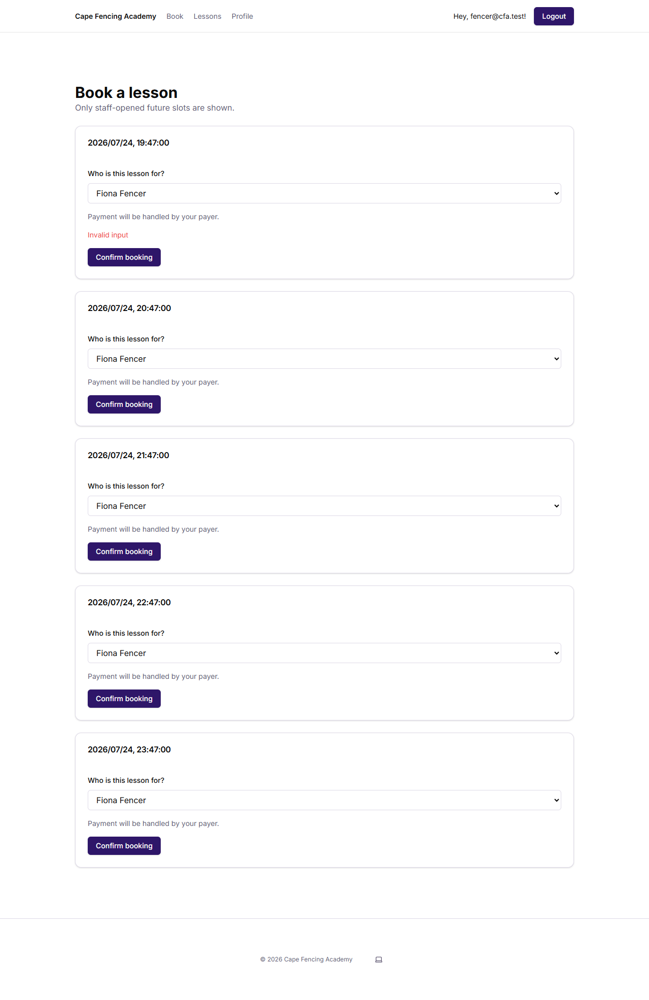
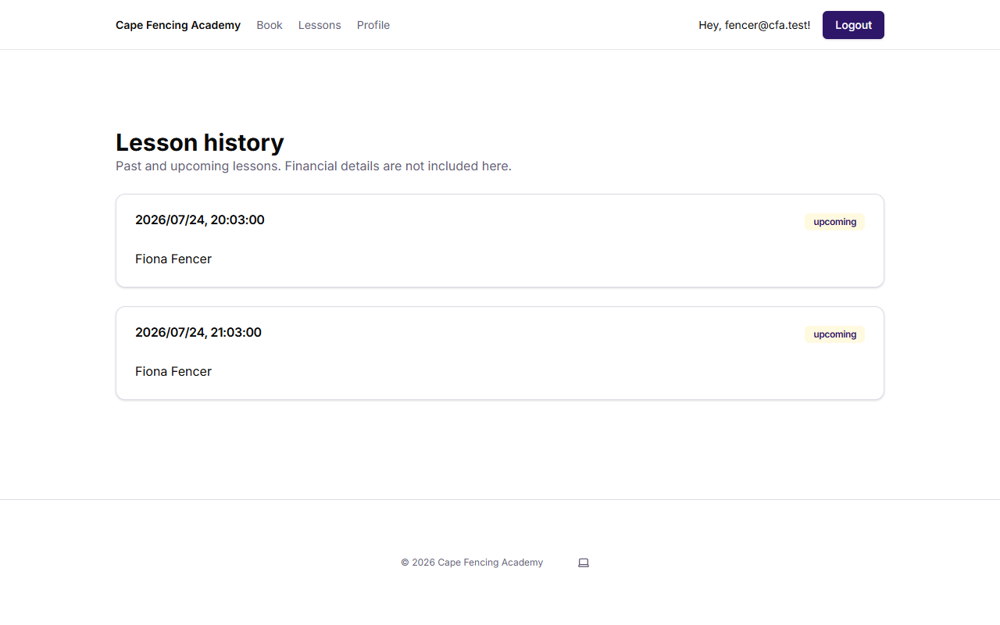

P1·Phase 00·Resolved
Seeded users cannot book lessons
Strict request validation rejected the non-RFC fixture UUIDs used by local Auth accounts.
Before
The dependent form returned “Invalid input,” created no booking, and left lesson history empty.

Verification
All four fixtures now use valid version-4 UUIDs. The dependent booking persisted with forced pay-later and appeared under Fiona Fencer.
